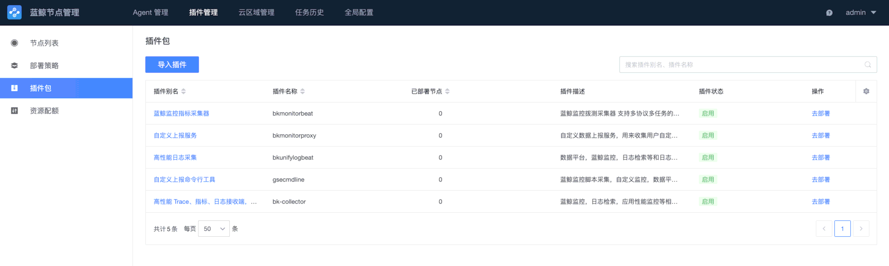
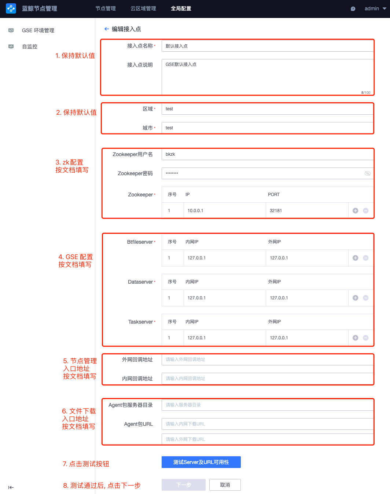

节点管理（bk_nodeman）部署后，需要先上传 Agent 及 插件包，并配置接入点。然后给 k8s 集群安装 Agent，实现纳管。
上传 GSE agent¶
提示
在之前使用
./scripts/setup_bkce7.sh -i nodeman时，已经完成了此步骤，可以跳过。提示
- 当你需要更新客户端或者加装云区域代理时，可以在下载后使用此命令重新上传。
在 中控机 执行如下命令下载 Agent（linux-x86_64、linux-aarch64、windows-x86_64）：
bkdl-7.1-stable.sh -ur latest gse_agent
cd ~/bkce7.1-install/blueking/ # 进入工作目录
./scripts/setup_bkce7.sh -u agent
提示
其他系统及架构的 GSE Agent 由蓝鲸服务商适配，蓝鲸不提供下载及技术支持。
上传 gse 插件包¶
提示
在之前使用
./scripts/setup_bkce7.sh -i nodeman时，已经完成了此步骤，可以跳过。
在 中控机 执行如下命令下载插件合辑，包含常用系统及架构（linux 及 windows 的 x86-64、linux arm64）：
bkdl-7.1-stable.sh -ur latest gse_plugins_freq
将下载的插件包上传到 节点管理：
cd ~/bkce7.1-install/blueking/ # 进入工作目录
./scripts/setup_bkce7.sh -u plugin
结尾最后一段 JSON 显示 "message": "略 | all package under path->[/app/official_plugin] is import success, file_count->[1] package_count->[7]" 即为上传成功。
脚本执行完成后，访问节点管理的 「插件管理」——「插件包」界面，可以看到上传成功的插件包： 
{kind=link}
插件合辑中各子包的用途： | 插件包名 | 用途 | 描述 | | -- | -- | -- | | bkmonitorbeat | 蓝鲸监控指标采集器 | 支持多协议多任务的采集、监控和可用率计算，提供多种运行模式和热加载机制 | | bkunifylogbeat | 高性能日志采集 | 日志相关的采集 | | bk-collector | 多协议数据采集 | 高性能 Trace、指标、日志接收端，支持 OT、Jaeger、Zipkin 等多种数据协议格式。替代了之前的 bkmonitorproxy。 |
提示
- 单独下载子包默认版本：
bkdl-7.1-stable.sh -ur latest 插件包名- 指定版本：
bkdl-7.1-stable.sh -ur latest 插件包名=版本号- 下载到中控机后，上传到节点管理：
./scripts/setup_bkce7.sh -u plugin
上传 GSE Proxy¶
提示
- 当你需要更新客户端或者加装云区域代理时，可以在下载后使用此命令重新上传。
在 中控机 执行如下命令下载 Proxy （仅 linux-x86_64，不支持其他系统及架构）：
bkdl-7.1-stable.sh -ur latest gse_proxy
cd ~/bkce7.1-install/blueking/ # 进入工作目录
./scripts/setup_bkce7.sh -u proxy
./scripts/setup_bkce7.sh -u opentools # 上传proxy所需的开源工具
配置 GSE 环境管理¶
请先登录到蓝鲸桌面，打开“节点管理”应用。然后点击顶部导航栏 “全局配置”，会默认进入“gse 环境管理” 界面。
点击 “默认接入点” 右侧的 “编辑” 图标，进入 “编辑接入点” 界面。如下图所示： 
{kind=link}
1. 按场景快速配置¶
其中，zk配置 的填写要求如下。
* 用户名和密码：使用蓝鲸内置的 bk-zookeeper-0 实例时，无需修改。自定义 zk 请按需修改。
* 集群地址：使用蓝鲸内置的 bk-zookeeper-0 实例时，IP 填写 任意 k8s node IP，PORT 填写 32181（注意不是默认的 2181，此处取 bk-zookeeper 服务的 NodePort）。
根据你的使用场景不同，GSE服务端、回调地址 以及 Agent下载地址 有不同的配置值。
* 内网环境使用域名访问节点管理及制品库（要求建设内网 DNS 系统，且机器默认可解析相关域名）
请阅读对应的场景章节。
1.1. 场景：内网环境使用域名访问节点管理及制品库¶
提示
仅当你的内网具备 DNS 服务，且新系统默认能解析 DNS 时，才能顺畅地使用域名作为入口。如果每次安装 agent 前还需要通过其他方式批量修改
/etc/resolv.conf文件，则使用域名并不划算。
在 中控机 运行如下命令生成 配置 及 域名解析信息：
cd ~/bkce7.1-install/blueking/ # 进入工作目录
BK_DOMAIN=$(yq e '.domain.bkDomain' environments/default/custom.yaml) # 从自定义配置中提取, 也可自行赋值
IP1=$(kubectl get pods -A -l app.kubernetes.io/name=ingress-nginx -o jsonpath='{.items[0].status.hostIP}')
zk_host=$(kubectl get pod -A -l statefulset.kubernetes.io/pod-name=bk-zookeeper-0 -o jsonpath='{.items[0].status.hostIP}')
data_server=$(kubectl get pod -A -l app=gse-data -o jsonpath='{.items[0].status.podIP}')
file_server=$(kubectl get pod -A -l app=gse-file -o jsonpath='{.items[0].status.podIP}')
task_server=$(kubectl get pod -A -l app=gse-cluster -o jsonpath='{.items[0].status.podIP}')
cat <<EOF
Zookeeper: （可以写任一 node 的 IP，此处取 zk 所在 node，注意端口为nodeport 32181）
$zk_host 32181
Btfileserver （内网 IP 和外网 IP 相同）：
$file_server
Dataserver （内网 IP 和外网 IP 相同）：
$data_server
Taskserver （内网 IP 和外网 IP 相同）：
$task_server
外网回调地址 和 内网回调地址 一样：
http://bknodeman.$BK_DOMAIN/backend
Agent包服务器目录: 保持为空
Agent包URL : 2 个输入框均改为下面的内容：
http://bkrepo.$BK_DOMAIN/generic/blueking/bknodeman/data/bkee/public/bknodeman/download
请参考如下映射关系配置 DNS 系统，或者修改待纳管主机的 hosts 文件：
$IP1 bkrepo.$BK_DOMAIN
$IP1 bknodeman.$BK_DOMAIN
EOF
根据提示的内容，在界面填写即可。
点击 “测试 Server 及 URL 可用性” 按钮。测试通过后，可以点击“下一步”。
在新的 “Agent 信息” 及 “Proxy 信息” 确认界面点击 “确认” 按钮即完成节点管理的配置。
接下来请你前往 DNS 系统完成上面域名的解析。
2. 配置DNS域名解析¶
3. 配置细节说明¶
不建议编辑默认接入点的名字及说明。
- 区域及城市
填写 GSE 集群配置的值，如果和 GSE 配置不一致则会禁止安装。在默认接入点中，区域及城市均为test。 - zk 配置
节点管理通过 zk 读取 GSE 服务端的数据。请按需修改，如果使用蓝鲸内置的服务，请参考上面的场景文档填写。 - GSE 服务端系列配置
部署后会填写当前的 IP，可暂不修改。
今后如需更新某个字段（BtfileServer、DataServer或TaskServer），请将该字段的**内网 IP**改为127.0.0.1，以指示节点管理自动修改。
自动修改仅进行一次，会使用 zookeeper 中的服务发现地址填充**内网 IP**及**外网 IP**。 - 节点管理回调地址
用于安装日志上报等。需配置为节点管理bk-nodeman-backend-api服务的 NodePort 地址：IP:30300。 - 外网回调地址：和内网回调地址保持一致。
- 内网回调地址：填写
http://任意Node的IP:30300/backend（注意结尾没有斜杠）。 - 部署文件下载地址。
用于下载安装脚本、安装文件及用户自定义的监控插件等。 - Agent 包服务器目录：请保持为空。
- agent 包 URL：
需配置为制品库bk-repo-bkrepo-gateway服务入口。可以是域名bkrepo.$BK_DOMAIN或者 NodePort 地址：IP:30025。- 内网下载 URL：第一个输入框。填写
http://任意Node的IP:30025/generic/blueking/bknodeman/data/bkee/public/bknodeman/download。 - 外网下载 URL：第二个输入框。内容同**内网地址**。
- 内网下载 URL：第一个输入框。填写
点击“下一步”进入第二页时的配置项：
* 大部分字段均可保持默认值。
* dataipc 填写 47000。
* Proxy 上的安装包 后续会调整。可以临时填写 gse_client-linux-x86_64.tgz。
配置完成，点击 “确认” 即可创建接入点。
给 node 安装 gse agent¶
需要给集群的 “全部 node”（包括 master） 安装 gse agent，并放入《蓝鲸》业务。
agent 用途：
1. job 依赖 node 上的 gse agent 进行文件分发。节点管理安装插件时也是通过 job 分发。
2. 容器监控需要通过 node 上的 gse agent 完成监控。
请参考 《安装蓝鲸 Agent（直连区域）》 文档安装 agent。
在节点管理的 “普通安装” 界面，选择 业务为《蓝鲸》，云区域为 “直连区域”，安装通道及接入点均使用默认值。
提示
如果误选了《资源池》业务，可等待 agent 安装完毕。然后回到蓝鲸桌面，访问 “配置平台”，进入 “资源” —— “主机” 界面。
全选刚才新安装的主机，点击 “分配到” 按钮，选择 “业务空闲机池”。在弹窗中选择 《蓝鲸》 业务，点击 “确定” 按钮。完成后可点击顶部导航进入 “业务” 界面，左上角切换业务为 《蓝鲸》，即可看到这批主机。
当安装 agent 完成后，为所有 agent 批量安装 bkmonitorbeat 和 bkunifylogbeat 插件，以便 上报主机监控数据 及 提供日志采集能力。
常见报错：
1. [script] agent(PID:NNN) is not connect to gse server，请检查 “配置 GSE 环境管理” 章节的配置是否正确。
2. 命令返回非零值：exit_status -> 6, stdout -> , stderr -> curl: (6) Could not resolve host: bkrepo.$BK_DOMAIN; Unknown error，请检查目标主机的 DNS 配置是否正确，也可临时添加 hosts 记录解决解析问题。或参考 “配置 GSE 环境管理” 章节配置 agent url 为 k8s node IP。
3. ERROR setup_agent FAILED process check: agentWorker not found (node type:agent)，agent 启动失败。如果是先添加的 k8s node，然后安装 agent 会遇到此问题。可先行取消调度此 node，然后驱逐所有 pod，并删除主机的 /var/run/ipc.state.report 目录。然后先安装 agent，再将 node 加回集群。
下一步¶
或者[启动蓝鲸 API 测试工具]。